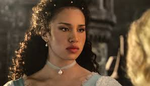
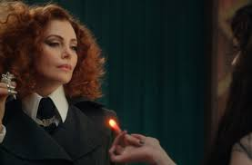
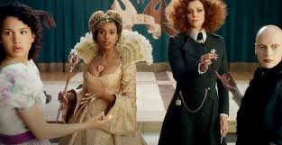
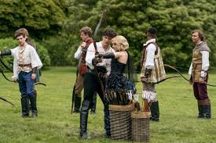

The School for Good and Evil is a 2022 fantasy film directed by Paul Feig, who co-wrote the screenplay with David Magee, based on the 2013 novel of the same name by Soman Chainani.[8][9][10] The film stars an ensemble cast led by Sophia Anne Caruso as Sophie and Sofia Wylie as Agatha, two best friends who are sent to the Schools for Good and Evil. After their fortunes are seemingly reversed, their friendship is put to the test. The film's development began in 2013, when the rights to the novel were acquired by Roth/Kirschenbaum Films and Jane Startz Productions, with Universal Pictures initially set to release the film. After the project languished in development hell, Netflix took over in 2017, and Feig was hired to direct three years later. Principal photography took place in Northern Ireland between January and July 2021. The School for Good and Evil was released on October 19, 2022, by Netflix. The film received mostly negative reviews from critics, who praised its cast and visuals, but criticized the narrative and storytelling.
Plot:
Long ago, twin brothers Rhian and Rafal founded the School for Good and Evil, created to groom fairy tale heroes (called "Evers") and villains (called "Nevers") respectively. Dissatisfied with evil’s constant submission to good, Rafal attacks Rhian using blood magic. Defending himself, Rhian throws Rafal off a cliff, presumably killing him. Years later, in the village of Gavaldon, best friends Sophie and Agatha learn about the legendary school from the bookshop owner. While the cynical, misfit Agatha is skeptical, fairy tale-obsessed Sophie leaves a letter for the School at a tree, hoping to escape ordinary village life and become a princess. A few nights later, Sophie attempts to run away from Gavaldon in secret. When Agatha finds out and tries to intervene, a giant stymph suddenly snatches up both, flying them to the School. To their dismay, however, Agatha is dropped at the School for Good while Sophie is delivered to the School for Evil. Agatha protests, wishing to return to Gavaldon, while Sophie wants to transfer to the School for Good. At the welcoming ceremony, Agatha and Sophie meet Tedros, the son of King Arthur and the most popular Ever prince. In the library, Rafal manifests to Agatha, warning her to stay away from Sophie. Agatha reunites with Sophie and they seek out the School Master and the magical Storian pen. The School Master informs Sophie he'll only allow her to switch schools if she can prove herself an Ever by attaining true love's kiss. Sophie casts Tedros as her true love and enlists Agatha’s help. Meanwhile, Agatha and Sophie struggle in their respective classes and are outcast by their peers. Agatha witnesses as another student, Gregor, is punished for repeated failure and transformed into a stymph. Though Agatha tries to help him, Tedros leaps in to defend her and unknowingly kills Gregor with Excalibur. When Agatha lashes out and insists she does not belong at the School, Ever Dean Clarissa Dovey argues her selfless, empathetic personality makes her the first true princess in a long time. Meanwhile, Sophie gets into an argument and is attacked by Hester, another student, causing Rafal to intervene as a wasp swarm. Never Dean Leonora Lesso interprets this as Sophie's unique potential for finally winning a victory for Evil, something thought impossible for centuries. When Sophie tries to get close to Tedros, Lesso cuts her hair to break her spirit. Under Rafal's influence, Sophie undergoes a radical change in both appearance and personality; gaining the favor of the Nevers, befriending Hester and her friends (who become her circle of followers) and rising to the unofficial position of leader of the School for Evil's student body. Though she diverges from Agatha, the latter still tries to aid Sophie by using magic to bring her and Tedros together. An Ever and a Never being together causes chaos between both schools; the School Master determines a "Trial by Tale" to settle the issue. At the Trial, Sophie ends up proving inept in defending herself and Tedros, prompting an infiltrating Agatha to save him in her stead. This results in Tedros ultimately rejecting Sophie for choosing self-preservation over him, with the prince starting a relationship with Agatha. Convinced by Rafal that Agatha is her enemy, Sophie accepts his offer of blood magic. Sophie incapacitates Dovey, Lesso, and the other school staff, and crashes the Evers’ Ball, now physically transformed into a hag; threatening Agatha and goading Tedros into attacking the School for Evil. However, by attacking, the Evers break the law of “Good defends, Evil attacks.” As a result, the Nevers and Evers magically switch places and a violent battle breaks out. Sophie heads to the School Master's tower, seeking revenge. She confronts him, who reveals himself to have been Rafal all along; having survived the fall and killed Rhian instead, assuming his identity and manipulating Good's stories to weaken Good from within, favoring Evil. He then proposes a union to Sophie to rule together, declaring her his true love. As they kiss, both Schools start collapsing, horrifying Sophie. When Agatha appears, Rafal tries to impale her with the Storian. Sophie pushes Agatha out of the way and takes the fatal hit; her sacrifice undoes Rafal's spell, saving everyone. Agatha, with Sophie and Tedros' help, takes Excalibur and kills Rafal. As Sophie dies in Agatha's arms, she kisses Sophie goodbye; this, in turn, revives Sophie, as their kiss proved to be a demonstration of true love. With the Evers and Nevers having reconciled and the school staff restored and they greatly decided to unite the two schools into one, a portal to Gavaldon opens. Agatha kisses Tedros before choosing to cross over with Sophie, returning to their old lives. The film ends with an arrow piercing the veil between worlds followed by a mysterious knife, with Tedros' voice pleading he needs Agatha; the Storian then states that "this is only the beginning."
Production:
Development and pre-production:
In 2011, studios reportedly considered a film adaptation based on The School for Good and Evil series. Shortly after the publication of the first book of the series in 2013, Roth Films partnered with Jane Startz Productions to acquire rights to produce a film based on the novel. Universal Pictures won the auction in a seven-figure deal for book and scriptwriting fees. Roth, Startz and Palak Patel were appointed producers. Chainani and Malia Scotch Marmo were hired to write the screenplay, with the former writing the initial two drafts. In July 2015, Chainani stated he and Scotch Marmo finished writing the script. After the film languished in development hell, Netflix purchased the rights with a new team that included David Magee and Laura Solon as screenwriters in 2017. The streaming service expressed interest in live-action family films since most family films were animated. Other studios frequently rejected big-budget productions because of the expenses or the risks of releasing a family film that was not based on preexisting intellectual property; however, the Netflix's ambition to find films that appeal to all ages led it to buy those productions, such as The School for Good and Evil. Paul Feig was offered a spot as director, but he was hesitant due to the film's contrasts with his style and unfamiliar genre. However, he reconsidered after he read the script, in which he enjoyed the characters, story, and opportunities for world-building.He was also interested in the relationships between the characters, as well as good and evil. Feig aimed to depict the lead characters' female friendship interestingly, as such relationships were often portrayed contentiously onscreen. Feig joined in 2020, with Roth, Jeffrey Kirschenbaum, Startz, Laura Fischer and Feig as producers, and Zack Roth, Patricia Riggen and Chainani as executive producers. Netflix was supportive of Feig's rewrites and changes. Of the process, Feig stated: "once you direct things that you write, ... you almost write like you're in the editing room".[clarification needed] Sometimes, when the studio or producers requested that a certain thing be explained in the script and the writers suggested including it using dialogue, Feig knew that it was unneeded as "once you see two people ... looking at each other in that emotion, you just feel it"; however, they retained the lines in case audiences during test screenings did not understand that part. While the novels are targeted towards young adults, Feig set out to create "an anti-Disney" film that, while reinterpreting fairy tales, also probed genuine issues and darkness. In the books, the students are in their mid-teenage years; Feig, however, believed The School for Good and Evil did not necessarily need to be set at a high school. In the film, the students are approximately 18 to 19 years old. As the film developed, the team required more money for various things; Netflix subsequently increased the budget.
Casting:
Fiona Weir was appointed casting director. In November 2020, she opened casting for a "teenage girl with albinism".Feig made note to select talented, nice, and cooperative actors; Chainani stated casting was based on talent, not looks. Characters were reinterpreted to "make sure [their] spirit ... is best embodied in that particular actor". Many fans desired open casting; Chainani stated there would be certain parts that might require "intense open casting", while with others, the ideal actor can be found easily.According to Chainani, casting Hester was difficult due to her "very, very specific energy". Laurence Fishburne joined the cast as the School Master due to his daughter's love for the books, which she started reading as a tween. When casting the roles of Sophie and Agatha, the crew explored the world for "two young actors who have enough weight to them and enough gravitas but also can muster up the likeness".[clarification needed] Actresses Sophia Anne Caruso and Sofia Wylie were eventually cast in the roles of Sophie and Agatha, respectively. Caruso learned of The School for Good and Evil after a general meeting with Feig. The script was sent to her shortly after; Caruso was impressed by the writing. However, Feig's collaborative and optimistic attitude, as well as his acting experience, was what ultimately persuaded Caruso to join the cast. Wylie auditioned for Agatha through a series of self-tapes and a chemistry read with Caruso. Feig said she submitted the "most amazing audition" and wanted to cast her immediately. According to Caruso, Wylie was clearly "easy to talk to and friendly", with the two having "an immediate connection". After Charlize Theron had completed work on F9 (2021), Kirschenbaum spoke to her about portraying "a different kind" of villain. She previously acted in many fantasy films, such as Snow White and the Huntsman (2012). Feig, who had worked with her on Arrested Development (2005), expected her to decline the role due to The School for Good and Evil's similarities to her other films. However, Lady Lesso differed from her other roles as a teacher who relished evil, allowing Theron to "have much more fun in a way than some of those movies where you have to be very serious". Feig had long sought to collaborate with Kerry Washington, but their schedules had never allowed it. He knew as soon as he read Professor Dovey's role that he only wanted Washington to play the part, partially due to her comedic skills. Compelled by the idea of working with Feig and Theron, Washington accepted. After reading The School for Good and Evil, she realized that Dovey was different from any character she had portrayed, being "so larger than life and filled with light, and [having] a lot of comedic beats". For the character's foundation, Washington made the decision to draw on real-life examples. She gave considerable thought to the archetype of fairy godmothers and finishing schools, as well as one of her instructors at Spence School, an all-girls school in New York that she had attended.
Design and sets:
Feig did not want the film to look similar to the Harry Potter film series and thus chose Andy Nicholson as production designer. Due to Feig's dislike of green screens and hope for "the characters and the actors to be performing in that world so they become part of it", much of the scenery was constructed, including the Schools for Good and Evil. The two sound stages constructed at Belfast Harbour Studios played a crucial role in that. The only scenes that used green screens were those in the beginning and those including Rafal, since the skies had to be altered. The film's style takes inspiration from Art Nouveau, which Feig noticed while filming Spy (2015) in Budapest, Hungary. Feig stated that this avoided comparisons to other films, being "both garish and over the top". Nicholson subsequently incorporated elements from other architects, including Antoni Gaudí and Victor Horta, creating "this big melting point of design". The team was allowed to "take over" St Anne's Cathedral. During the two weeks they worked there, the crew transformed the area into "this big, almost sound-stage type space ... with so much detail".
Costumes:
The costumes maintained the design's individuality and distinctiveness, with Reneé Kalfus and Feig designing them. It felt fitting that each character would bring their own sense of style and culture given that many of the characters are the children of well-known fairy tale characters. Feig said he allowed Kalfus to "run wild" with this concept. The costumes were inspired by a variety of media, including classic fairy tales and Beyoncé. Unlike the books, the film the students do not wear uniforms, allowing, according to Chainani, more creativity.[clarification needed] The actors were encouraged to contribute to their costumes. In particular, Theron wanted Lesso to have a tailored and severe silhouette; she also suggested the ginger hair and showed Feig various reference photos. Caruso discussed Sophie's evolution of style with Kalfus, including with "princessy" dresses and "potato sack" uniform at the School for Evil. She eventually transitions into punk glam costumes, which Caruso felt needed "such a specific type of hot that suits her fiery spirit".[clarification needed] Wylie insisted on keeping her curly hair, wanting to show such hair can still be associated with princesses. Over 800 costumes and 600 pairs of shoes were produced by more than 70 costumers. The wolf characters are "guys in suits, with animatronic heads" so the actors had something to act against. Professor Dovey's blond bouffant wig took seven weeks to produce, including one to create its color; designer Linda Villalobos chose its look to highlight her goodness and prevent her from looking evil, as well as demonstrate texture.
Filming:
According to Feig, filming on location was essential in order to avoid overusing special effects. Netflix was unable to shoot the production at its Shepperton Studios in Surrey, because it was too small; they decided to instead film at Northern Ireland for the first time. Feig selected its city Belfast as the filming location, as he had friends who had shot there, including production members from Game of Thrones (2011–2019). He also cited its close proximity to London, which would make travel between the two cities easy, though this was not the case due to the COVID-19 pandemic. The film was shot at several locations in Belfast, including Belfast Harbour Studios and Loop Film Studios.]At the former, the full 125,000 sq ft (11,600 m2) of the studio, workshop and office space was used. Derry was also considered as a filming location but was rejected for numerous reasons. Local sites The School for Good and Evil was filmed at include St Peter's Church; St Anne's Cathedral; Mount Stewart; Ulster Folk Museum; Clandeboye Estate; Woodburn Forest; Castle Archdale; and Antrim Road. Production followed the British Film Commission safe working protocols due to the COVID-19 pandemic; Feig always wore a mask. Feig was particularly pleased to film at Big Dog Forest in Fermanagh, since he thought building such a place would be impossible. Some crew members tried to persuade him against filming there, but he insisted because the forest was unlike anything he had ever seen.In January 2021, it was reported filming had begun. The crew encountered difficulties with shooting on the first day, as it rained heavily, creating puddles of mud. Roughly 350 to 500 crew members worked on The School for Good and Evil, the majority of whom were locals. In May 2021, filming wrapped for Washington and Theron. According to Chainani, filming wrapped on July 3 or 4, 2021; Feig, however, needed to shoot another scene, which was filmed by the end of the month.
Post-production:
After the film wrapped, Feig began editing, with Erik Nordby as effects supervisor. The film's visual effects were provided by British companies DNEG and Framestore. Feig hoped for the film's world to have a sense of realism, despite its magical aspects, which he tried to keep elemental;an example is the stymph. In the books, it is a bird made of bones that takes children to the Schools for Good and Evil. The team wanted it to be sentient while retaining its bones. They researched bird skeletons and decayed birds, studying the way the tissue and feathers stay on the bones, and the interactions of these three things. The team used computer-generated imagery to add expressions and emotions to the animatronic characters.
Will there be a school for Good and Evil movie 2?
'The School for Good and Evil 2' is yet to be confirmed by Netflix. 'The School for Good and Evil' is the first book of the six-book series. 'A World Without Princes' is the next book of the series which follows Agatha and Sophie once again swept off in the school program.